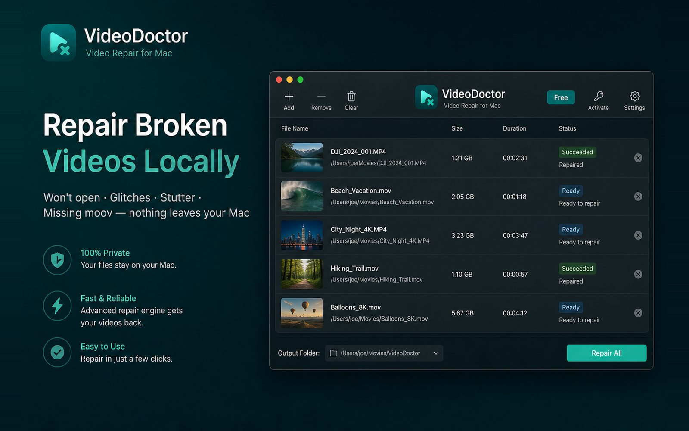
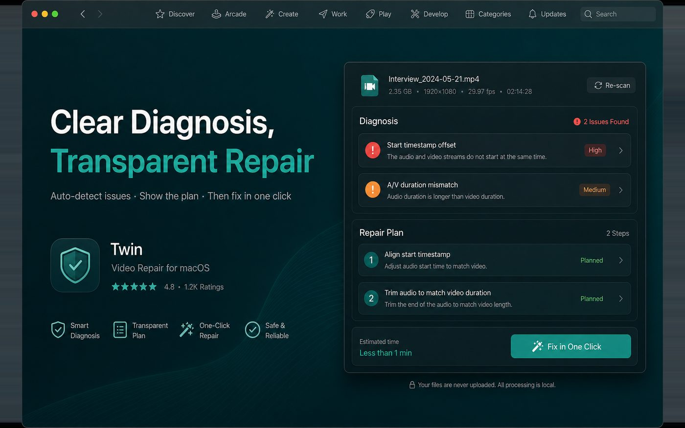

Won’t open
When players reject the file or the container looks wrong, diagnose first, then export a playable MP4.
Unplayable files, glitches, stutter, missing indexes—diagnose and repair on your Mac. Originals stay read-only. Nothing is uploaded.

Professional, best-effort repair paths for the breakage you actually hit in day-to-day capture and export.
When players reject the file or the container looks wrong, diagnose first, then export a playable MP4.
Interrupted recordings and incomplete files get a best-effort index recovery path.
Mosaic blocks and corrupt frames—skip bad packets when possible and rebuild a readable stream.
Bad timestamps and A/V drift are handled according to the diagnosed repair plan.
Keep the recoverable track and remux toward a more compatible package.
Drop many files into a queue—ideal for meetings, lectures, and phone imports.
Drop files in, review the plan, export results—everything stays on your Mac.
Drag one or many files, or use Add Video in the toolbar.
Optionally tell us what you saw—or leave it on auto-detect.
Read the issue list and repair plan before you run.
Results go to your output folder. Source files remain read-only.

See what was detected, how severe it looks, and which steps will run before you click repair.
Try Free for occasional emergencies. Unlock Pro once when you need unlimited local repairs.
For occasional rescues
One-time purchase on this Mac
Browse FAQs, sandbox tips, and output-folder guidance—or reach us via GitHub Issues / email.